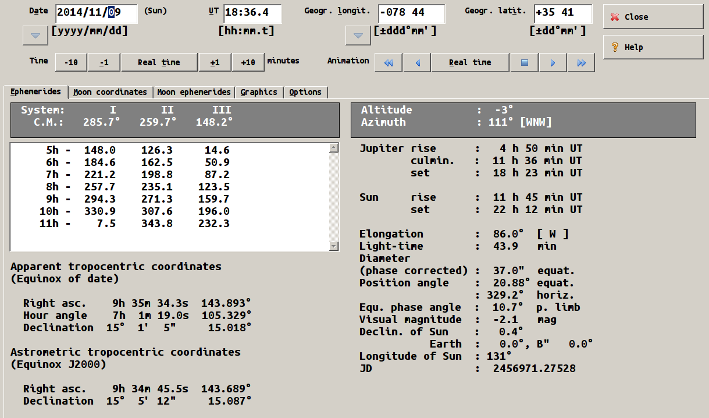
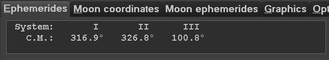
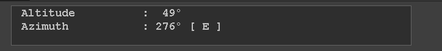
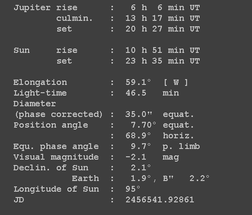

import os arcsec='\"' degree="°" CurrentFile="D:\\D-Permanent\\Astronomy\\Logs\\currentephem.txt" file = open(CurrentFile,"a") # ISODATE="" # # #WINJUPOS # WinJ=(Pattern().similar(0.42).targetOffset(-460,-333)) Cmsys=() Alt=() Eph=() # os.popen("killall workrave") switchApp("WinJUPOS") # #CMSYS # hover(Cmsys) rightClick(Cmsys) sleep(0.5) type("c") sleep(0.5) UTandCM=ALTtext = Env.getClipboard() DATE=UTandCM.split()[0] TIME=UTandCM.split()[2]+UTandCM.split()[3]+'C' CMSYStext=UTandCM[35:] # #ALT hover(Alt) dragDrop(Pattern().targetOffset(-337,-27),Pattern().targetOffset(98,19)) type("c", KEY_CTRL) ALTtext = Env.getClipboard() ALT = ALTtext.split()[2] # #Ephemerdis # hover(Eph) rightClick(Eph) sleep(0.5) type("c") sleep(0.5) Ephtext = Env.getClipboard() E=Ephtext.split() Planet=E[0] Dia=E[51] Mag=E[71] Ring=E[80].rstrip(',') Elong=E[39] ElongDir=E[41] LoS=E[87] #=E[] # #RESULTS # R=(DATE+" - "+TIME+"\n\n"+CMSYStext+"\n\n"+ "Dia:"+Dia+", mag:"+Mag+"\n"+ "Alt:"+ALT+", Ring:"+Ring+"\nElong: "+Elong+"("+ElongDir+")") #popup(R) #UnicodeEncodeError: 'ascii' codec can't encode character u'\xb0' in position 39: ordinal not in range(128) #file.write(R) # # os.popen("notepad "+CurrentFile) sleep(5) type(Key.END, KEY_CTRL) sleep(0.5) paste(R) type('s', KEY_CTRL) sleep(2) os.popen("workrave")